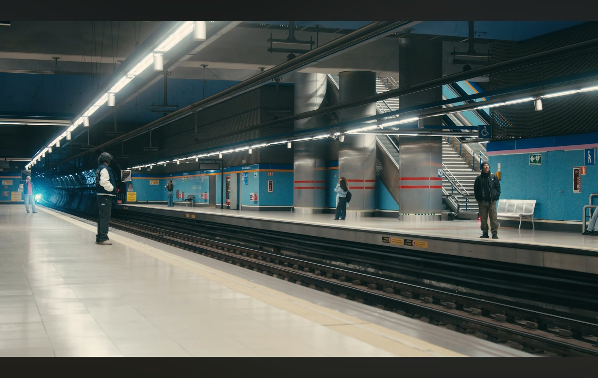
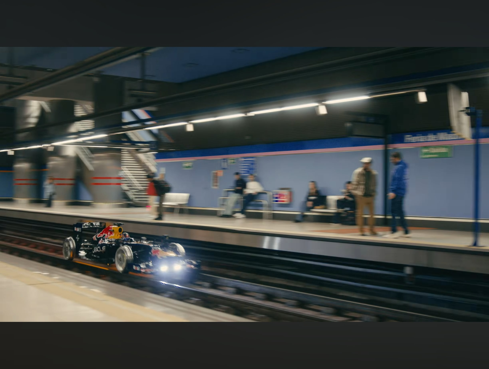
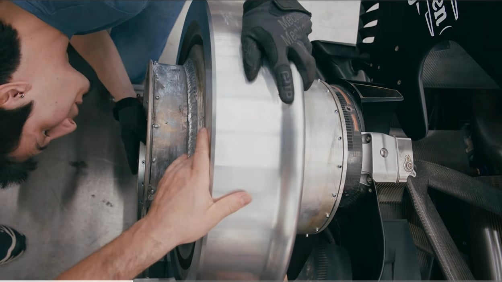
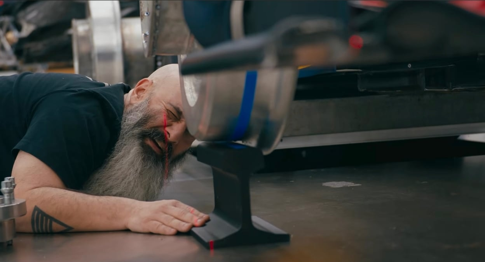
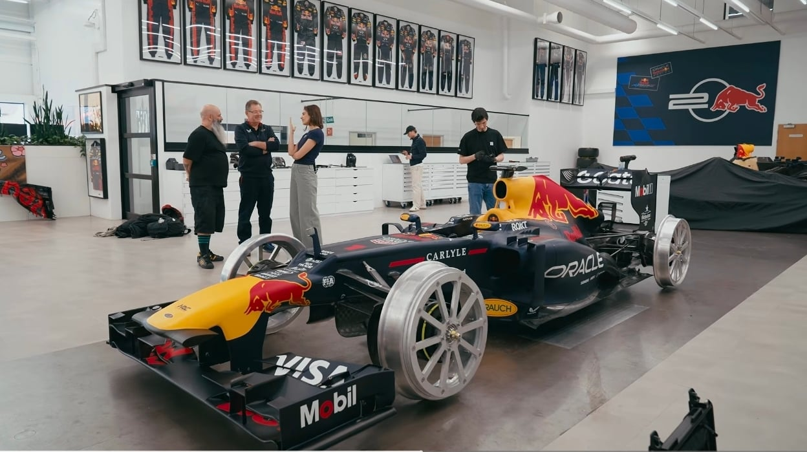
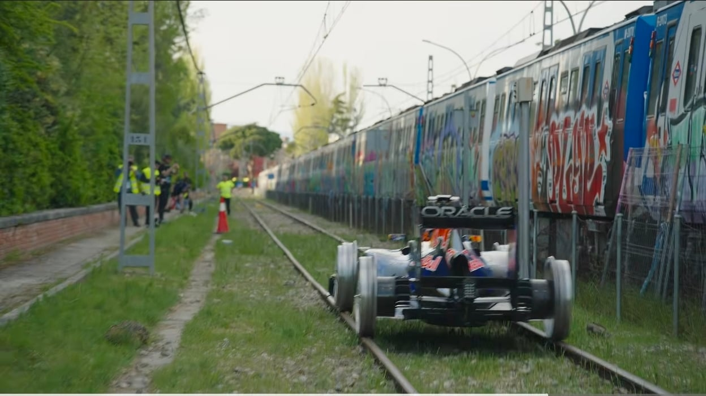
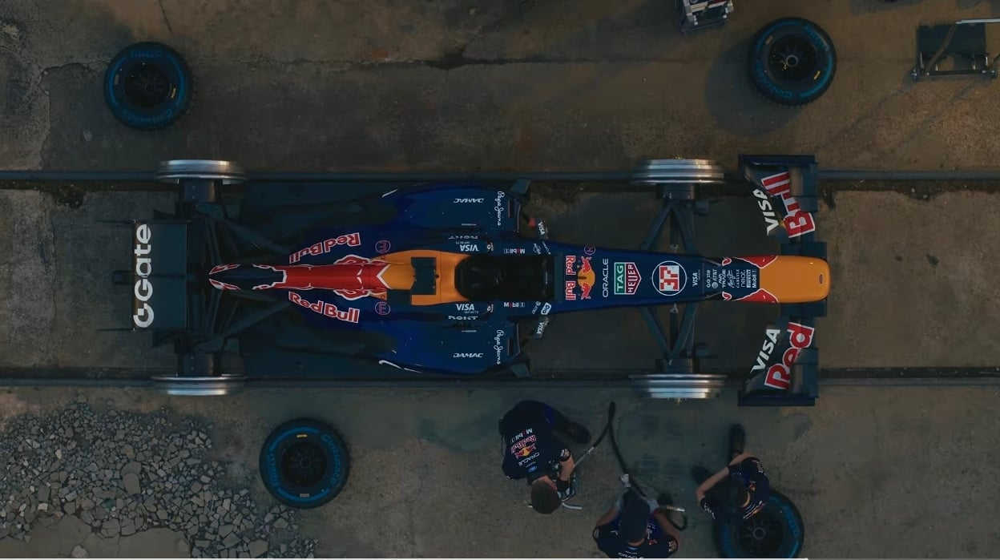
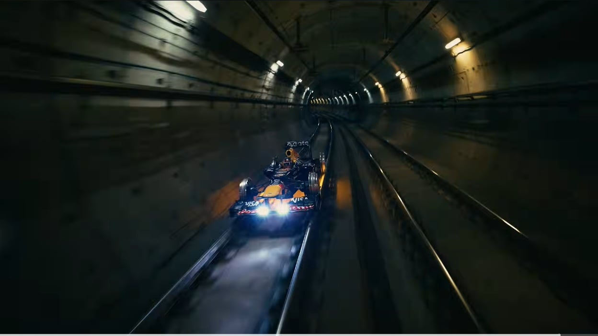

와 열차들어온다~~~~

.......?






기차 레일과 f1머신 폭이 알고보니 딱 맞음.
>> 레일바퀴 단 F1머신의 레일 쾌속질주.
ㅋㅋㅋㅋㅋㅋㅋ

와 열차들어온다~~~~

.......?






기차 레일과 f1머신 폭이 알고보니 딱 맞음.
>> 레일바퀴 단 F1머신의 레일 쾌속질주.
ㅋㅋㅋㅋㅋㅋㅋ
이제 RB8좀 놔줘라
불스원샷이나 똑바로 만들어라
레드불도 경의중앙선에서는 불가능 ㅋㅋㅋ
폭이 딱 맞아
2번째짤 보자마자 싱글벙글하면서 확인함ㅋㅋㅋㅋ
이런 미친새끼들 근데 개재밌겠다 ㅋㅋㅋ = 레드불
저런건 몇미터 전부터 브레끼 밟아야되냐..
가벼워서 기차보단 제동거리 짧을듯
DRS 끄면 바닥에 붙어버릴듯 ㅋㅋ
와 상상만 하던걸 진짜 했네 개재밌겠다 ㅋㅋㅋㅋ
철바퀴로 달린다고? 엉덩이 존나 아플꺼 같은데..?
노면보단 부드러울거같은데
근데 철바퀴잖아
쿠션이 없잖아.
어쨌든 서스펜션이 달려있으니
다운포스 할 때 쓰라고 있는 서스펜션이지. 승차감과는 거리가 멀텐데...
쿠션감을 신경쓰는놈이 감히 레드불의 이름을 달겠는가!
철바퀴 안달면 레일에서 어떻게 달리게ㅋㅋㅋㅋㅋㅋㅋㅋㅋ
기차는 어케탐?
기차는 승차감위주 서스펜션 이라 그런데 저거는 걍ㅋㅋㅋㅋㅋ 개딱딱+의자 랄것도 카본쪼가리자나
그걸신경쓰면서저런짓하겠음?
그 아픈 엉덩이는 금융으로 치료해드리겠습니다~
딱 맞는 것도 웃기네 ㅋㅋㅋ
앞 뒤 바퀴폭 다르지 않던가
근데.진짜 표준궤랑 딱맞음? ㄷㄷㄷㄷ
기차레일이 F1차랑 딱맞다니 협궤인건가 ㄷㄷ
F1 생각보다 차 되게큼
RB7 (사진속 차) 시절 규정 찾아보니 전폭 1.8미터에 전장이 4.8~5미터 된다네
전장 5미터라니 ㄷㄷ
표준궤가 1.4m좀 넘어가니 얼추 맞은듯
??????
개쩐다 ㅋㅋㅋㅋ
이새끼들 음료수는 취미생활이고 저게 본업 같은데
모래뿌려야가는거아님??
허가를 어캐 받은거냐 ㅋㅋㅋㅋㅋ 뭐 새벽 3시 촬영 이런 조건인가
차체 무게가 얼마 안나가서 접지력이 엄청 딸릴 거 같은데 어떻게 해결한건지 궁금하네
다운포스! 공기역학으로 차체를 누른다!!
뒤에서 기차 쫓아오는거임?
다운포스 있으니까 탈선 염려가 없으려나 ㅋㅋㅋ